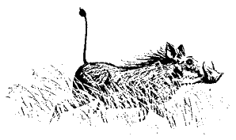

2016
Estate Bottled Pinot Noir
Fort Ross-Seaview
Round, bright cherry flavors. Medium bodied. Strong backbone, minerals. Pomegranate finish.
- 14% alcohol
- 420 cases produced

In the cellar now
All of the wines are drinking well right now. Please remember to let these wines breathe a bit. They will open up if given a chance.
Welcome to Winter 2023. We were fortunate to have no fires or smoke this summer. We are experiencing the first "Cazadero" winter that we have seen in quite a few years with 72 inches of rain so far.
Round, bright cherry flavors. Medium bodied. Strong backbone, minerals. Pomegranate finish.
Dark fruit on the nose. Smooth, round, blood orange and dark cherry flavors. Long smooth finish.
From our 37 year old certified organic vineyard five miles from the ocean in the hills above Fort Ross. This small block of Sryah always produces a lovely wine. Deep dark fruit and firm tannins. With and hour or more of breathing you see more of the round and smooth flavors of this wine.
This is our second Grenache from Eaglepoint Ranch. It is from Mendocino County and is organically farmed. A full bodied wine with great structure, black cherry, and well balanced.
This is our second Syrah from Eaglepoint Ranch. It is from Mendocino County and is organically farmed. A little bigger and richer than our Estate Syrah as it is from a warmer climate.
Nero d'Avola is a Sicilian grape. These grapes are from our friends at Nova Vineyard in Dunnigan Hills. This wine is full bodied, rich, with dark plum flavors. Smooth and tasty. Marion says "Purrs like a kitten."
Cabernet Sauvignon with a touch of Merlot, Cab Franc and Malbec. A warm nose with just a hint of oak. Smooth, round, easy on the palate. Bramble fruit. Dark fruit, with a smooth finish.
Spice on the nose Dried fruit, round mouth feel, good acid, tannin, fruit balance. Lingering finish of bright fruit.
Medium body. Bright fruit. Subtle finish and oak. Great food wine to complement all dishes.
From the montepulciano grape. This wine is a favorite, and always fun to share. Hint of Santa Rosa Plums on the nose. Nice structure. Big mid palate fruit and tannins. Long, lingering finish.
Mixed case special
$275 plus shipping
We are happy to mix and match cases. We do this to give you the opportunity to try all of our wines.
For pricing and ordering information, please contact: